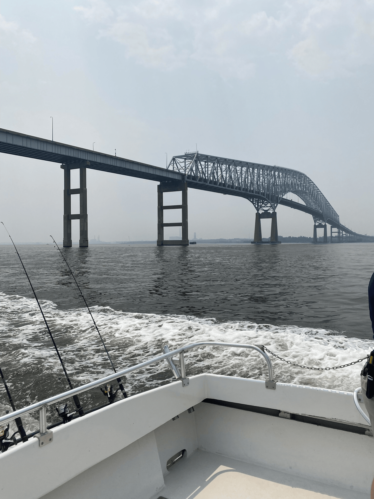

Please click on the labs below to view all websites I created:
My favorite Labs were:
Lab 08: You can view the live version here: Interactivity and Animation
The reason I enjoyed this lab was because I was able to give it a personal touch with a picture I captured. Here is my favorite picture for this lab:

I also really enjoyed Lab 10 because it explored how web standards allow keyboards to function like gaming controllers.